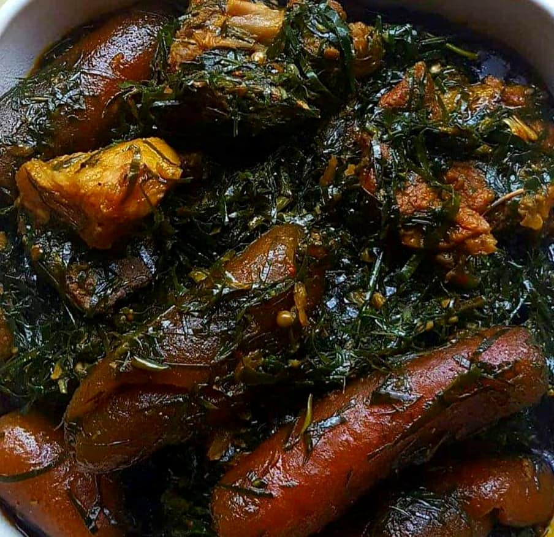

Recette Eru
Le Eru est un plat originaire du Sud-Ouest du Cameroun. Sa préparation s’élabore à base des feuilles d’Okok, de Waterleaf, de la viande et de l’huile de palme. Il se mange soit avec du water fufu, soit avec du tapioca.
- Total:Approximative 1h45min
- Preparation:30min
- Cuisson:1h15min
Ingredients
- 1 paquet de feuilles de Eru ou 3 tasses de feuilles de Eru (ou Okok)
- 750 g de feuilles d’épinards ou 3 tasses de feuilles de water leaf
- 1 tasse de Mandjanga ou écrevisses
- Poissons fumés (brochettes, bifagas ou morue)
- 1 kg de viande de bœuf
- 1/4 litre d’huile de palme
- Piment (facultatif)
- 200 ml d’eau: utiliser le jus de cuisson de la viande et du poisson de préférence.
- Sel
Instructions
- Etape 1: Lavez et découpez tous vos légumes (Eru)
- Etape 2: Découper votre viande en petits morceaux, bien laver et cuire dans une casserole. Rajouter une pincée de sel et du cube. Personnellement, je n’ai pas mis de sel car les côtelettes de porc ont été fumé au préalable avec du sel. Vous devez juste vous rassurer que la quantité d'eau ait réduit quand la viande est cuite (maximum 150 mL). Ou bien qu'il n'y ait plus d'eau si possible car les épinards contiennent déjà assez d'eau.
- Etape 3: Mettre l’Okok dans la casserole contenant la viande, remuer et laisser mijoter pendant quelques minutes. Rajouter par la suite les épinards et bien remuer; les épinards viendront ramollir le mélange. Vos feuilles d'Okok doivent bien se mélanger à celles des épinards.
- Etape 4: Apres 5 min, rajouter de l’huile de palme et laisser cuire pendant 10-15 min en remuant de temps en temps pour éviter que ça ne crame. Rajouter enfin les écrevisses, le cube et le piment et votre Eru est prêt.
- Etape 5: Pour la préparation du tapioca, 1 verre de tapioca nécessitera 2 verres d’eau. Chauffer l’eau à 100° dans une casserole, mettre le tapioca et se rassurer qu’il soit bien immergé. Tourner ensuite à l’aide d’une spatule. Il se prépare de la même manière que le fufu. Faire ensuite des boules.
Nutrition
Le tableau ci dessous vous montre les valeurs nutritionnelles des differents aliments utilisés pour la cuisson de ce repas ainsi que les calories qu'ils apportent
| Calories | 277kcal |
| Glucides | 0g |
| Proteins | 20g |
| Lipides | 22g |